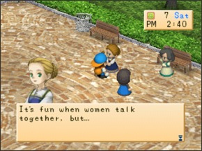

SASHA  Sasha é a esposa de Jeff neste videogame e ela constantemente da uma dura nele por permitir que os aldeãos comprem coisas fiado e tirar vantagem dele. Ela é também mãe de Karen. Aniversário: 30 de primavera Receita: Biscoito de chocolate(Chocolate Cookie) CRONOGRAMA Dia Hora Local Todo dia exceto Terça-feira 6:00 am a 1:00 pm Por Dentro da área da casa de supermercado Todo dia exceto Terça-feira 1:30 pm a 4:00 pm Na Praça da Cidade Todo dia exceto Terça-feira 4:45 pm a 12:00 am Por Dentro da área da casa de supermercado Todo dia exceto Terça-feira (Se está chovendo) 6:00 am a 12:00 am Por Dentro da área da casa de supermercado Terça-feira 6:00 am a 7:00 am Por Dentro da área da casa de supermercado Terça-feira 8:00 am a 10:00 am No Rancho Yodel(At Yodel Ranch) Terça-feira 10:50 am a 1:00 pm Na Fazenda Poultry(Poultry Farm) Terça-feira 1:50 pm a 4:00 pm Na casa de Ellen Terça-feira 4:40 pm a 12:00 am Por Dentro da área da casa de supermercado ᐅDando coisas que Sasha adora irá leva-lo adiante neste jogo então você provavelmente faça o melhor de dar presentes que ela gosta. A coisa mais fácil é qualquer flor. O que Sasha gosta e não gosta Adora Chocolate, Bolo de chocolate(Chocolate cake), Biscoito(Cookie) de chocolate(Chocolate cookie) e Biscoito(Cookie) Gosta Maçã(Apple), Arroz de bambu(Bamboo rice), Curativo(Bandage), Flor vermelha mágica azul(Blue Magic Red Flower), Cenoura(Carrot), Curry em pó(Curry Powder), Farinha(Flour), Suco de fruta(Fruit Juice), Latte de fruta(Fruit latte), Suco de uva(Grape juice), Berinjela feliz(Happy Eggplant), Mel(Honey), Pão com geleia(Jam Bun), Receita ketchup, Leite(Milk), Sopa de missô(Miso soup), Suco misto(Mixed Juice), Latte misto(Mixed latte), Flor de amendoeira(Moondrop Flower), Óleo(Oil), Taça de laranja(Orange cup fruit), Orichalc, Abacaxi(Pineapple), Flor do gato rosa(Pink cat flower), Abobora(Pumpkin), Pão de passas (Raisin Bread), Flor vermelha da magia vermelha(Red magic red flower), Chá relaxante(Relaxation Tea), Espinafre(Spinach), Morango(Strawberry), Geleia de Morango(Strawberry), Leite de Morango(Strawberry), Tomate, Flor da brincadeira(Toy flower), Trufa(Truffle), Arroz de Trufa(Truffle), Suco de Vegetais(Greens)(Vegetable Juice), Latte vegetariano(Veggie latte), Lã(Wool) e Bola de novelo(Yarn ball), Neutro Geleia de Maçã(Apple jam), Torta de Maçã(Apple pie), Broto de bambu(Bamboo shoot), Erva Azul(Blue grass), Bodigizer, Bodigizer XL, Ovo cozido(Boiled egg), Pão(Bread), Manteiga(Butter), Repolho(Cabbage), Bolo(Cake), Fondue de Queijo(Cheese fondue), Bolo de Queijo(Cheesecake), milho(Corn), Pepino(Cucumber), Curry, Macarrão com Curry(Curry noodles), Pão francês (Dinner rool), Berinjela(Eggplant), Peixe (qualquer tamanho)(Fish(any size)), Macarrão frito(Fried Noodles), Arroz frito(Fried Rice), Batata frita(Fries) Ovo de ouro(Gold Egg), Geleia de uva(Grape Jam), Erva verde(Green grass), Pimenta verde(Green Pepper), Vegetais(Greens), Leite quente(Hot Milk), Sorvete(Ice cream), Ketchup, Maionese(Mayonnaise), Cogumelo(Mushroom), Arroz de Cogumelo(Mushroom Rice), Macarrão(Noodles), Omelete(Omelet), Cebola(Onion), Nabos em conserva(Pickled turnips), Picles(Pickles), Pizza, Pipoca(Popcorn), Batata(Potato), Pudim de Abobora(Pumpkin Pudim), Erva vermelha(Red grass) Folhas de chá relaxantes(Relaxation tea leaves), Bolinho de arroz(Rice ball), Omelete de arroz(Rice omelet), Batatas torradas(Rosated Potatoes), Salada(Salad), Sandwich, Ovos mexidos(Scrambled eggs), Ovo cozido(Boiled egg) do Spa, Bobó(Stew), Fritada(Stir fry), SUGDW Maçã(Apple), Batata doce(Sweet Potato), Batata doce(Sweet Potato) (prato)(Sweet Potato(dish)), Tempura, Macarrão com tempura(Tempura noodles), Suco de tomate(Tomato juice), Turbojolt, Turbojolt XL, Nabo(Turnip), Panqueca Vegetariana(Veggie Pancake), Uva silvestre(Wild grape) e Vinho(Wine) Não Gosta Adamantite, Queijo(Cheese), Chirashi Sushi, Minério de cobre(Copper ore), Ovo(Egg), Minério de ouro(Gold ore), Peixe grelhado(Grilled Fish, ), Mystrile, Sashimi, Minério de prata(Silver ore) e Sushi Odeia Galho(Branch), Ração de galinha(Chicken feed), Erva seca(Dead weeds), Comida de peixe(Fish food), Forragem(Fodder), Um fiasco de comida(Food fiasco), Receita de batata frita (fries recipe), Lixo(Garbage), Madeira(Lumber), Cogumelo Venenoso(Mushroom Poisonous), Ervas, Galho de inverno(Winter Branch), Madeira de inverno(Winter lumber) e Pedra de inverno (Winter Stone) Olá! Bem-Vindo!